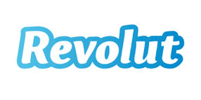
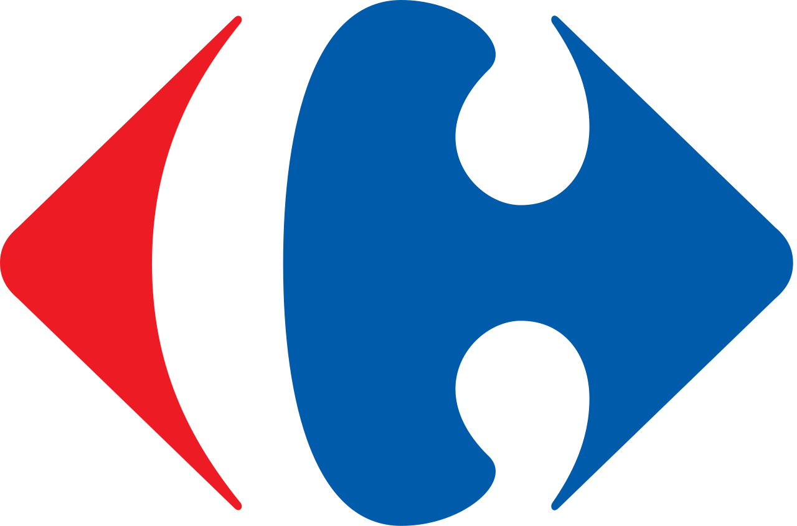

Une monnaie pour la ville résiliente
La mairie de Bordeaux veut redynamiser son centre-ville et en faire un foyer d'intitiatives positives. Poi va créer une monnaie permettant aux Bordelais de référencer les commerces éco-responsables, d'être récompensés pour leurs gestes quotidiens et de co-financer des initiatives locales. Par cela, Bordeaux dispose d'une cartographie de la consommation éco-responsable ainsi qu’une connaissance des initiatives prioritaires des habitants. Elle peut alors mettre en place des actions concertées pour améliorer la qualité de vie et générer du développement économique.
Un accélérateur de RSE pour les entreprises
Danone souhaite faire participer ses collaborateurs à son programme RSE. Poi lui permet de lancer un programme de récompense des actions positives réalisées par ses collaborateurs. Danone choisit les critères de valorisation et les apps représentant les comportements qu’ils souhaitent développer. Danone utilise la plateforme Poi pour permettre à ses équipes de proposer et de choisir des initiatives ayant un impact social ou sociétal. Ainsi, Danone dispose d’un indice fiable de ses externalités positives internes qu’elle peut valoriser dans son programme RSE tout en y impliquant plus fortement ses collaborateurs.
Un activateur d'interactions solidaires
CDC habitat doit réhabiliter un de ses immeubles et décide d’y intégrer les dimensions inclusive (interactions avec le quartier) et positive (empreinte locale). Pour remplir ses objectifs le bailleur se réunit avec les grands occupants de l'immeuble et leur propose de créer un token d'immeuble via Poi qui récompense les efforts en terme de partage de compétences, de consommation d'énergie et d'interactions avec les commerces locaux. Les grands occupants et le bailleur ont alors accès à une cartographie des flux monétaires (génération & circulation) matérialisant l'impact global de l'immeuble.

Tracking d'impact pour solutions de paiement digitales
Grâce à Poi, Revolut accède aux labels des commerçants référencés et certifiés sur le réseau, lui permettant ainsi de communiquer à ses clients l’impact local de leur consommation et les encourager à l'améliorer (nudge). Revolut peut également stimuler l’impact de chaque transaction en créant un programme de cashback ou en contribuant à ceux déjà présents (collectivité, retailer, etc.).
Pour terminer, Revolut peut devenir l’un des acteurs de paiement privilégié de Poi App et être poussé à chaque lancement d’écosystème.

store d'applications positives
Yoyo est une plateforme qui stimule les actions individuelles de recyclage. Poi App intègre donc Yoyo comme solution d’impact au sein de son store. Chaque communauté peut ainsi activer via Yoyo le critère recyclage et stimuler l’utilisation de l’app via leur programme de reward. Suite à l’achat de tokens POI, Yoyo génère des yoyocoins qui permettent de rétribuer les utilisateurs. Ces tokens peuvent ensuite être dépensés partout dans l’économie locale, une récompense bien plus incitative que le modèle de discounts chez des commerçants actuellement proposé.
Stimuler l'impact local
L'eusko, monnaie locale du pays basque a passé le cap de la digitalisation. Elle fait appel à Poi pour créer un programme de reward via un token convertible en Eusko qui va ajouter les dimensions éco-responsables et solidaires à la dimension locale de leur monnaie. Ainsi Les utilisateurs de l'Eusko pourront avoir un indice fiable de leur impact territorial créant une véritable résilience dans leur réseau. La communauté de l'Eusko pourra également grâce à Poi identifier les leviers de développement nécessaires via la plateforme de vote d'initiatives positives.

Programme de fidélisation positif
Carrefour veut encourager les consommateurs à privilégier les produits bio et responsables et renforcer l'ancrage local des Carrefour Market.Ils créent un programme mariant fidélisation et reward autour de leurs produits bio et équitables grâce à la plateforme Poi. À l’aide de son protocole et en partenariat avec Open Food Facts, Poi certifie leurs engagements et les aide à mesurer l'impact réel de leur gamme. De plus à chaque passage en caisse, l’utilisateur est directement informé de l'impact de ses achats et son niveau de reward.
Une bases de données pour les cabinets d'études
Utopies, un cabinet d'études spécialisé dans les enjeux sociaux et environnementaux a besoin de récupérer des données terrain qualifiées. En devenant "ethic provider" du réseau Poi, Utopies a accès gratuitement aux données d'impact générées par les critères dont il est garant dans le protocole. Utopies peut également accéder aux données des autres critères en achetant des tokens POI. Poi devient ainsi pour Utopies un moteur de recherches et d’agrégation de données fiables basées sur des actions réelles des utilisateurs.